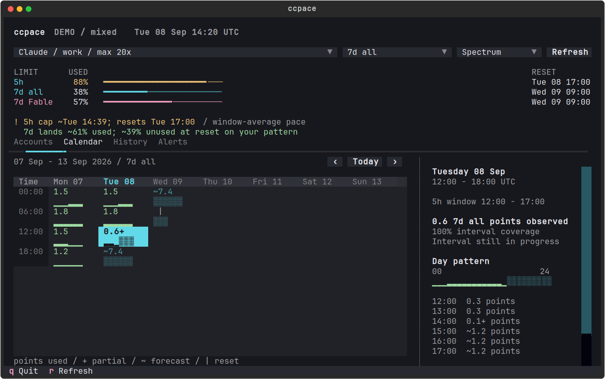
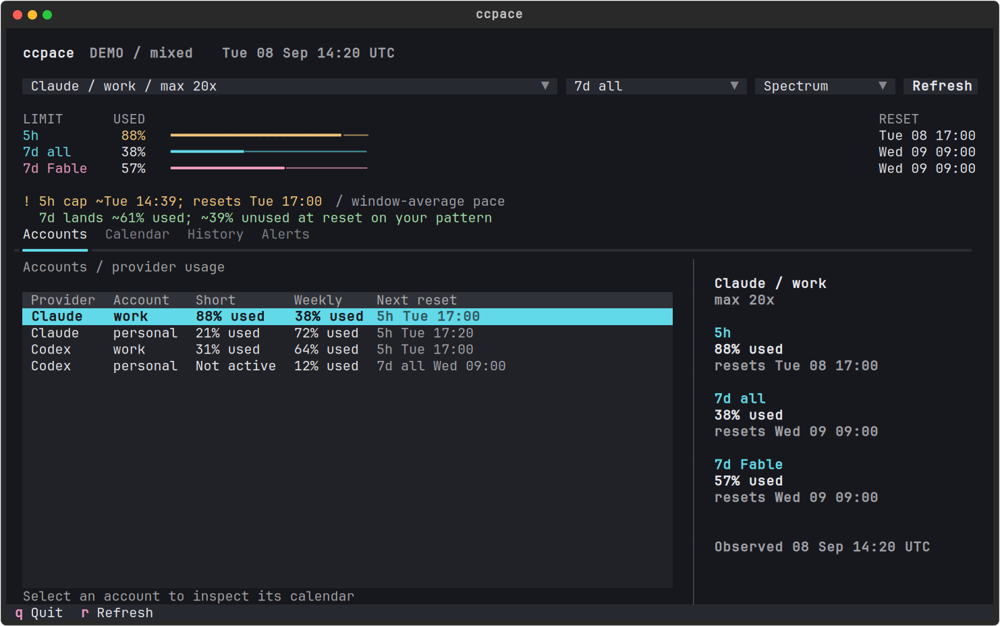

Which limit comes next?
5h, weekly, and model-scoped allowances stay separate. Each shows its usage and reset time, even while you inspect history.
Claude and Codex, across your accounts.
A 5h limit can run out while the weekly pool goes unused. Compare accounts and inspect both limits in one calendar, with history, forecasts, and alerts.
uvx ccpace --calendar --demoNo account needed for the demo. macOS + Linux.

Synthetic usage, rendered by ccpace. The amber line is 5h pressure; the weekly forecast remains visible beneath it.

Select an account to inspect its calendar. Viewing an account does not switch an agent's login.
5h, weekly, and model-scoped allowances stay separate. Each shows its usage and reset time, even while you inspect history.
Browse interval totals and hourly patterns. Select a day for the underlying observations. Missing history stays blank.
Forecasts learn from your own weekday and hourly usage. Alerts can go to your terminal, phone, or a JSON notification hook.
GET STARTED
Install uv, then run the demo. For live usage, sign into Claude Code or Codex first.
# Synthetic demo, no credentials
uvx ccpace --calendar --demo
# Your Claude and Codex accounts
uvx ccpace
# One snapshot for scripts
uvx ccpace --jsonUsage comes from provider OAuth endpoints. Claude history and caches are shared with claude-code-statusline; Codex has its own account-scoped store. Forecasts use that history; they are not promises of available capacity.
ccpace watches and warns. It does not control agent execution or redeem Codex resets. Provider endpoints can change. Claude tokens may refresh through the existing OAuth flow; Codex auth files stay read-only. Usage data stays local unless you configure notification destinations.
Data and limits ↗